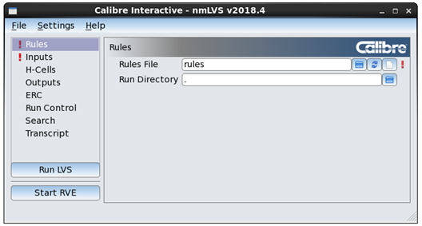

Invoking the Calibre Interactive GUI
You invoke Calibre
Interactive from a design tool or from the command line. Calibre DESIGNrev
and Cadence Virtuoso are supported.
Prerequisites
(Optional) Set environment variables to specify runsets and configuration files to load on invocation, as described in the following:
(Optional) Pre-populate the Recent Runsets and Recent Text Files lists as described in “Populating the Load Runset Files Dialog Box and Recent Files Lists”.
Procedure
Results
If you invoke the GUI from a layout tool, the open design is automatically used as the layout input. See “Templates Page in Calibre Interactive”.
The initial view of the GUI is similar
to that shown in the following figure. A  indicates
an incomplete or incorrect field. A
indicates
an incomplete or incorrect field. A  (not
shown) indicates a warning, such as for a setting that conflicts
with another option setting.
(not
shown) indicates a warning, such as for a setting that conflicts
with another option setting.
